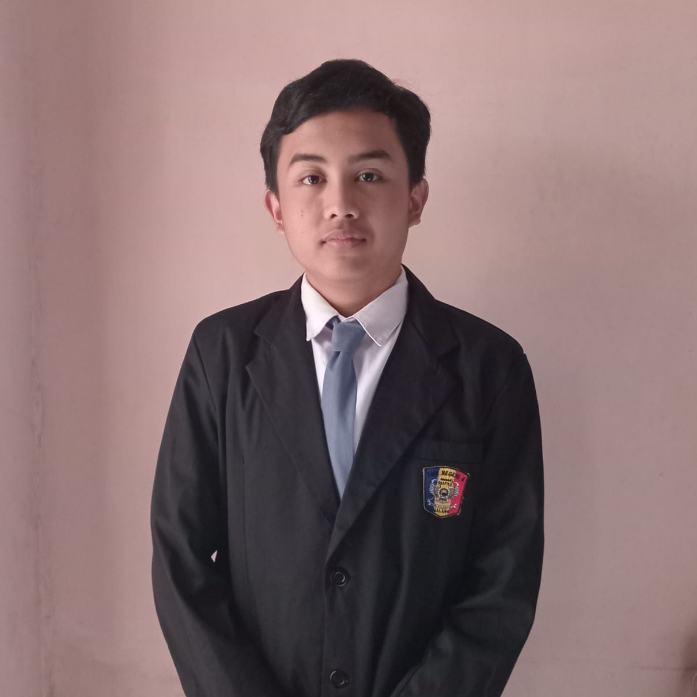
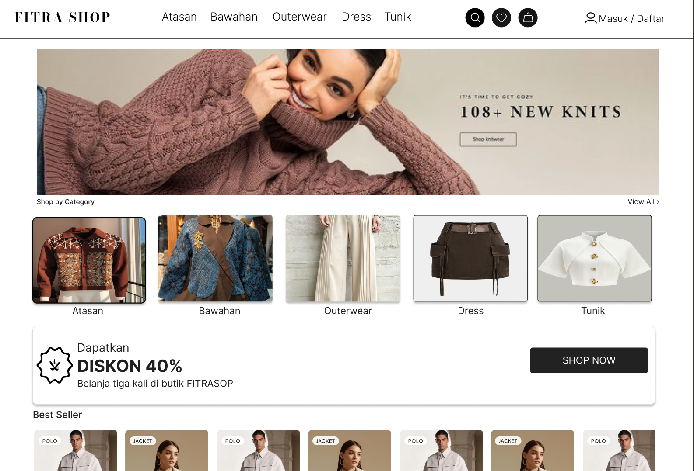
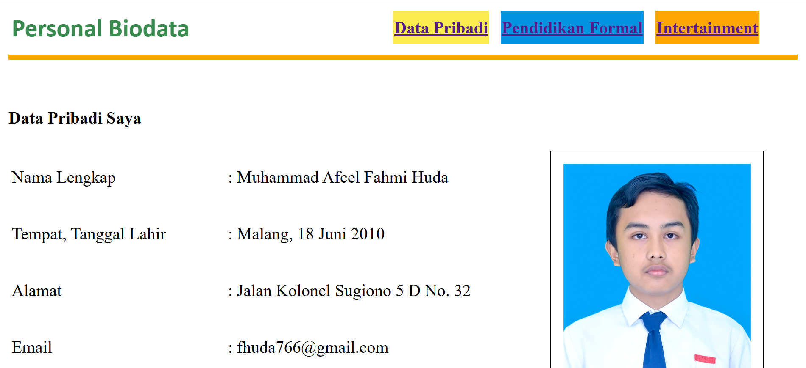
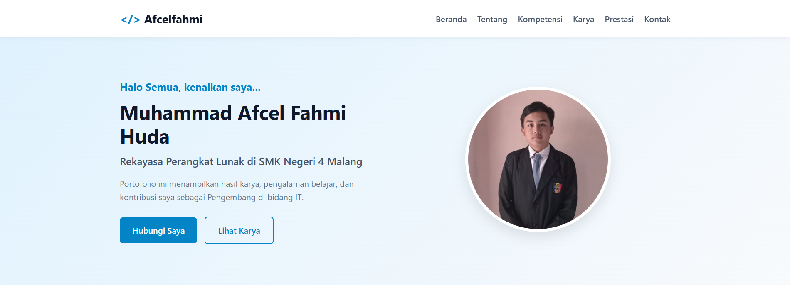

Portofolio ini menampilkan hasil karya, pengalaman belajar, dan kontribusi saya sebagai Pengembang di bidang IT.

Mengenal Lebih Dekat
Saya adalah siswa di SMKN 4 Malang yang mengambil konsentrasi keahlian Rekayasa Perangkat Lunak (RPL). Melalui pembelajaran di sekolah, saya aktif mempelajari dasar-dasar logika pemrograman, struktur data, serta prinsip dasar dalam perancangan aplikasi.
Fokus utama saya saat ini adalah mendalami seni merancang antarmuka tampilan web yang tidak hanya menarik secara visual tetapi juga nyaman digunakan oleh pengguna (user-friendly).
Tujuan utama saya setelah lulus dari SMKN 4 Malang adalah mengawali karier profesional sebagai Web Designer atau UI/UX Designer.
Saya ingin berkontribusi dalam merancang produk digital yang inovatif, estetik, dan solutif bagi pengguna.
Kemampuan Teknis
Sebagai pelajar RPL yang bercita-cita menjadi Web Designer, saya terus mengasah keahlian dalam memadukan estetika visual dengan fungsionalitas teknologi web:
Hasil Karya

Perancangan antarmuka pengguna interaktif (Wireframe & High-Fidelity) menggunakan Figma.

Proyek perancangan ulang tampilan situs web modern berbasis struktur HTML dasar.

Pembuatan situs web portofolio dasar sebagai sarana menampilkan profil dan tugas sekolah.
Rekam Jejak
Berpartisipasi aktif dalam kegiatan pembelajaran kejuruan dan praktikum lab komputer.
Mempelajari dasar-dasar perancangan antarmuka web dan alat desain modern secara mandiri.